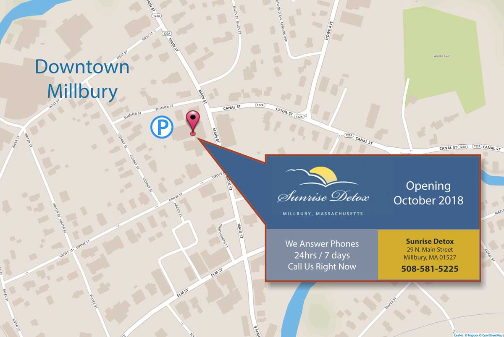
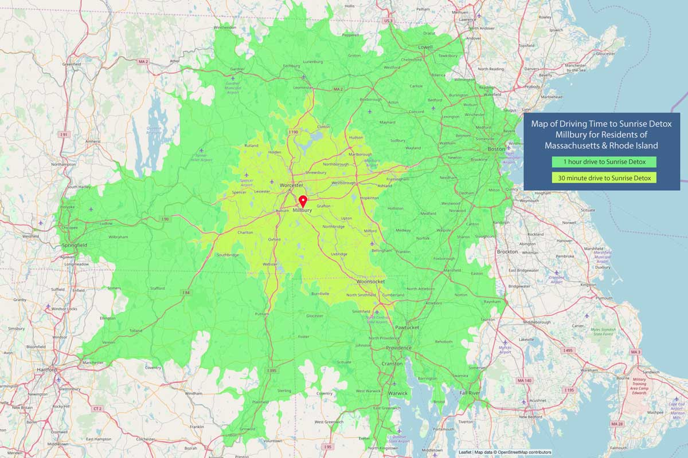

Sunrise Detox is centrally located in Millbury, Massachusetts, conveniently accessed via Rt 146 (Worcester-Providence Turnpike), I90 (Mass Pike), near the 290/395/90 interchange.
The Millbury medical detox facility is less than a 1 hour drive from downtown Boston or Providence, and just minutes from Worcester and Blackstone Valley communities.
Sunrise Detox is located on historic North Main Street in downtown Millbury, conveniently accessed via Rt 146 (Worcester-Providence Turnpike), I90 (Mass Pike), near the 290/395/90 interchange. The accessible main entrance is in
the rear of the building, with convenient on-site parking accessed via Summer Street. Sunrise Detox Millbury is just minutes from Worcester, and less than a 30 minute drive from Marlborough, Clinton, Milford/Bellingham, Woonsocket, Southbridge, Rutland, Putnam, and Leominster. Sunrise Detox is less than 1 hour from
Springfield, downtown Boston, the communities within the 128 Corridor, Waltham, Newton, Natick/Wellesley, Framingham, Concord, and Lowell, Massachusetts, and the Rhode Island communities of Providence, Warwick, Pawtucket,
Cranston, and Fall River. Connecticut residents living near Hartford are also only about an hour away from Sunrise Detox Millbury.
{kind=link}
{kind=link}